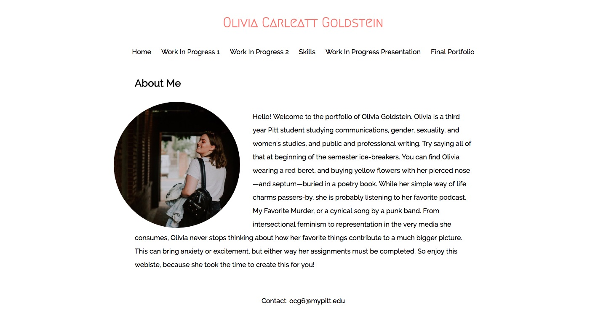

My Portfolio
I’m really proud of my website homepage. It started out extremely minimal, even boring. I was able to take something I thought as an impossible—a cool website I made myself—and turn it into a big success. Coding is a language all in itself, and I’m not great at learning new languages let alone mastering English. I cried over this website. I lost sleep over this website. I screamed over this website. Now, I’m confidently displaying it at a showcase! I was able to add a photo, tastefully incorporate color, and have it all actually work. I was able to communicate the design elements in my head to code, and the website represents who I am, and houses all I’ve accomplished throughout this course. It’s the best measure of my progress and feels the most complete out of all I’ve done. For the future, I might work on creating new menu items if I were to use this as a blog or professional website. I’m actually thinking about using this to post over the summer as I study abroad in London. I might then change my bio around a bit and maybe update my photo from something in London. Additionally, I might work on creating a header logo or silhouette, I’m of a beret, maybe in red. I’d also like to still play with the spacing of texting and titles, because there seems to be some awkward space towards the top.